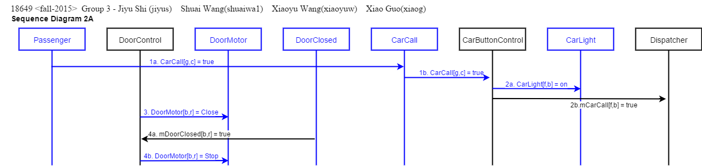
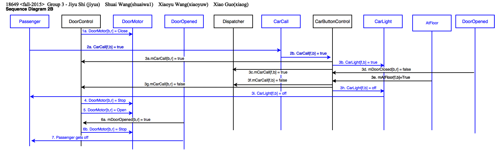
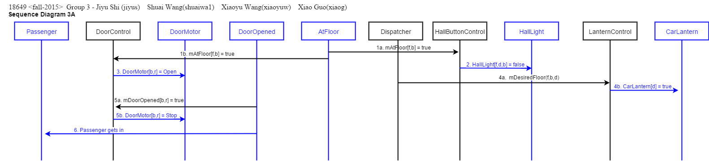
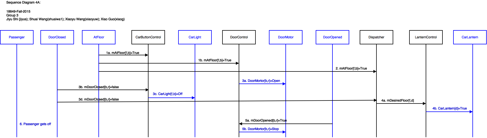
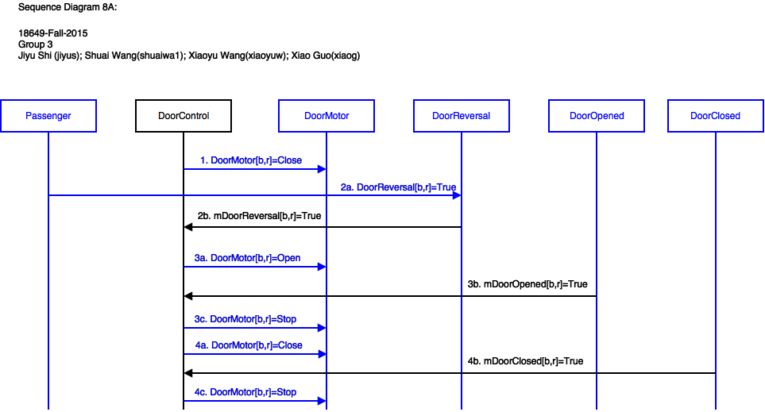
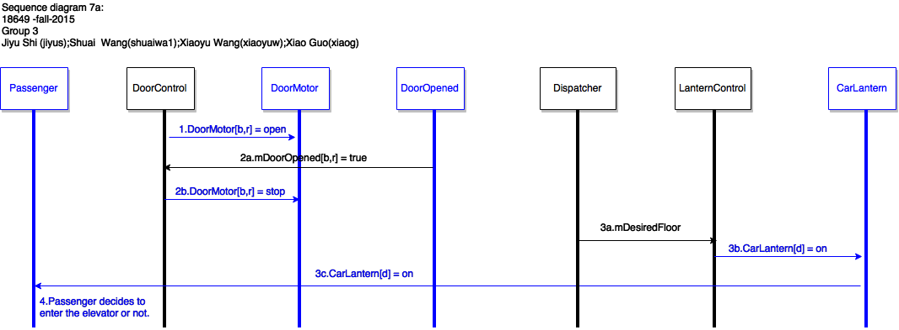
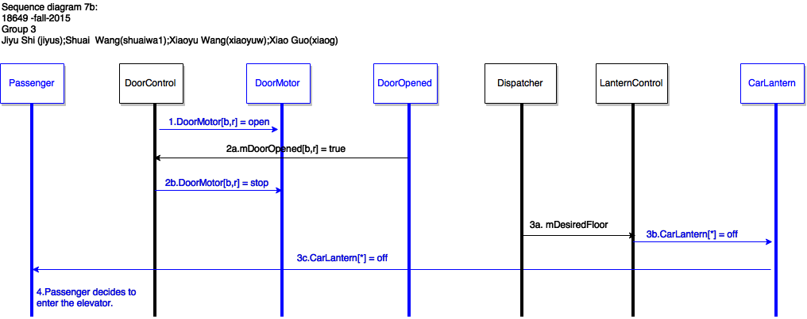
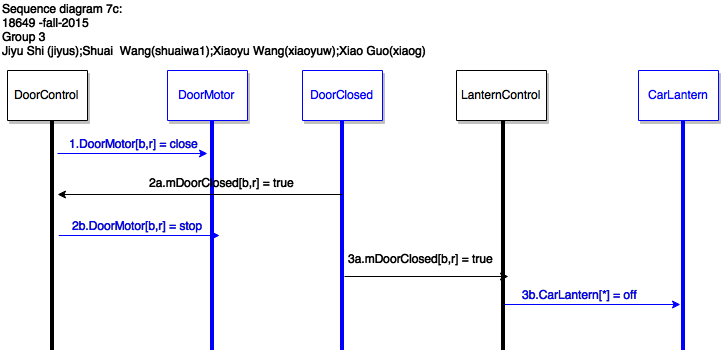

18-649 Scenarios and Sequence Diagrams
18649 <fall-2015>
Group 3 - Jiyu Shi (jiyus) Shuai
Wang(shuaiwa1) Xiaoyu
Wang(xiaoyuw) Xiao Guo(xiaog)
Scenarios:
- 1. Passenger Makes a Hall Call
- 2. Passenger Makes a Car Call
- 3. Passenger Enters Car
- 4. Passenger Exits Car
- 5. Passenger Triggers Door Reversal
- 6. Passenger Reads Car Position-R-T9
- 7. Passenger Reads Car Direction
- 8. Dispatcher Moves Car to Next Floor
- 9. Dispatcher Cycles Doors
Use Case 1: Passenger Makes A Hall Call
Scenario 1A: Passenger arrives at a hallway while elevator is elsewhere.
Pre-Conditions:
- All doors are closed.
- Passenger has already arrived at a hallway to use the elevator.
- Car is at another floor.
Scenario:
- Passenger pushes hall call (up or down) button for passenger's desired direction d.
- Passenger sees that corresponding hall button light turns on.
Post-Conditions:
- Elevator has not yet arrived at the passenger's floor.
- All doors are closed.
- Hall button light for passenger's desired direction is on.
Sequence Diagram:

Scenario 1B: Passenger arrives at a hallway when elevator is already there and the car is traveling in the same direction as desired by passenger.
Pre-Conditions:
- Car is at same floor as passenger.
- Car is traveling in same direction d as desired by passenger.
- At least one door[b,r] is open.
- Hall button light [f,b,d] for passenger's desired direction is off.
Scenario:
- Door[b,r] starts closing.
- Passenger arrives at a hallway [f, b] to use the elevator, with intent to travel in direction d.
- Passenger presses hall call button before doors are fully closed, but after doors are too fully closed for passenger to enter.
- Hall button lights up.
- Doors starts reopening.
- Doors fully opened and Passenger gets in.
Post-Conditions:
- Elevator is at the passenger's floor.
- Door is opened.
- Hall button light for passenger's desired direction is off.
- Passenger is inside the elevator.
Sequence Diagram:
{kind=link}
Scenario 1C: Passenger arrives at a hallway when elevator is already there and the car is traveling in opposite direction as desired by passenger.
Pre-Conditions:
- Car is at same floor f as passenger.
- Car is traveling in opposite direction ~d than direction d desired by passenger.
- At least one Door[b,r] is open.
- Hall button light for passenger's desired direction is off.
Scenario:
- Door[b,r] starts closing.
- Passenger arrives at a hallway [f,b] to use the elevator going in direction d.
- Passenger presses hall call button before doors are fully closed, but after doors are too fully closed for passenger to enter.
- Hall button lights up.
- Doors complete closing.
Post-Conditions:
- Elevator is at the passenger's floor.
- All doors are closed.
- Hall button light for passenger's desired direction is on.
Sequence Diagram:

Use Case 2: Passenger Makes A Car Call
Scenario 2A: Passenger is in the car and elevator is not at the desired destination floor.
Author name: Xiao Guo
Pre-Conditions:
- Car is at floor f, with at least one Door[b,r] open.
- Passenger is in the car and elevator is not at the desired destination [g,c], where f != g. Also, b might or might not be equal to c.
- Car call button for the desired destination is not lit.
Scenario:
- Passenger pushes car call button for passenger's desired floor g.
- CarLight[f,b] turns ON and send mCarCall[f,b] = true to Dispatcher.
- Door[b,r] starts closing.
- Door[b,r] completes closing.
Post-Conditions:
- Elevator is still at floor f.
- All doors are closed.
- Car call button lights up.
Sequence Diagram:
{kind=link}
2B: Passenger is in the car and the elevator has arrived at the passenger's desired floor, but passenger has not yet exited the car as the doors begin to close.
Author name: Xiao Guo
Pre-Conditions:
- Passenger is in the car.
- Elevator has arrived at the desired hallway, but the passenger has not yet exited the car.
- At least one door[b,r] is open.
Scenario:
- Door[b,r] starts closing.
- Passenger pushes car call button for the current floor f.
- CarLight[f,b] turns on and soon turn off and
send mCarCall[f,b] = true to Dispatcher and
DoorControl.
- Door[b,r] stops closing.
- Door[b,r] starts opening.
- Door[b,r] completes opening.
- Passenger gets out of the car.
Post-Conditions:
- Passenger is out of the car.
- Elevator is still at floor f.
- Door[b,r] is open.
Sequence Diagram:
{kind=link}
Use Case 3: Passenger Enters Elevator
Scenario 3A: Passenger is waiting at a hallway for the elevator and has already pressed the hall call button.
Author name: Xiao Guo
Pre-Conditions:
- Car is about to arrive at a hallway [f,b] at which passenger is waiting.
- The hall call button for passenger's desired direction d has already been pressed
- The elevator is going in direction d.
- Passenger is outside the car.
- All doors are closed.
Scenario:
- The elevator arrives at floor f.
- The hall call light goes off.
- Door[b,r] starts opening.
- CarLantern[d](Up or Down or Off) turns on according to the dispatcher's plan.
- Door[b,r] completes opening.
- Passenger gets in the car.
Post-Conditions:
- Passenger is in the car.
- Elevator is still at floor f.
- Door[b,r] is open.
- Hall button light for passenger's desired direction is off.
Sequence Diagram:
{kind=link}
Scenario 3B:
Passenger enters the elevator then the car is overweight.
Author name: Jiyu Shi
Pre-Conditions:
- Passenger enters the car while both door are open.
- No front door reversal occurs when the passenger enters.
- The car is overweight after the passenger gets on.
Scenario:
- The passenger gets in.
- The front door keeps open while the car is overweight.
- The passenger gets out of the car.
Post-Conditions:
- Passenger is outside the car.
- Elevator is still at floor f.
- Door[b,r] begin closing.
Sequence Diagram:

Use Case 4: Passenger Exits Elevator
Scenario 4A: Passenger is in the elevator as it arrives at the passenger's desired hallway.
Author name: Xiaoyu Wang
Pre-Conditions:
- Passenger is inside the car, traveling to desired floor f and hallway b.
- Car is traveling in direction d
- All doors are closed.
Scenario:
- Car arrives at the desired floor f and hallway b with door[b, r] closed.
- CarLight[f, b] turns off.
- Door[b,r] starts opening.
- CarLantern[d] turns on/off according to dispatcher' s plan.
- Door[b, r] open at hallway b.
- Passenger gets out of the car.
Post-Conditions:
Sequence Diagram:
{kind=link}
{kind=link}
Use Case 5: Passenger Triggers Door Reversal
Scenario 5A: Passenger attempts to enter the car as the doors begin to close.
Author name: Xiaoyu Wang
Pre-Conditions:
- Passenger is outside the car.
- Car is stopped at passenger's floor f and hallway b.
- At least one door[b,r] is open.
Scenario:
- Door[b, r] is closing.
- Passenger blocks the door[b, r].
- Door[b, r] is commanded to open.
- Door is fully opened and after a dwell is commanded to Close.
Post-Conditions:
Sequence Diagram:
{kind=link}
Scenario 5B: Passenger attempts to exit the car as the doors begin to close.
Author name:Xiaoyu Wang
Pre-Conditions:
- Passenger is inside the car.
- Car is stopped at passenger's floor f and hallway b.
- At least one door[b,r] is open.
Scenario:
- Door[b, r] is closing.
- Passenger blocks the door[b, r].
- Doors are commanded to open.
- Door is fully opened and after a dwell is commanded to Close.
Post-Conditions:
Sequence Diagram:
{kind=link}
Use Case 6: Passenger Reads Car Position
Scenario 6A: Passenger is in the car, which is moving from floor f past floor g (the next floor in the direction of travel)
Note: Recall that the Drive of the elevator we provided is never commanded to go Fast, so the elevator only moves Slow and can therefore stop right away when it sees the appropriate AtFloor[f, b](True). Your solution will probably involve the Drive going Fast for some portion of the trip, and the CarLevelPosition Sensor to plan when to slow down. You will be given information on how to design a Fast Drive in the upcoming projects. For Project 2, a Slow Drive will suffice.
Author name: Shuai Wang
Pre-Conditions:
- Car is at hallway [f, b].
- All elevator doors are closed.
- Car is moving in hoistway.
Scenario:
- Car moves the same direction d as passenger desired.
- CarLevelPosition(x) detects passing floor g.
- Passenger sees that CarPositionIndicator(f) changes to CarPositionIndicator(g).
Post-Conditions:
- Car is moving in hoistway.
- Elevator has not yet arrived at the desired floor.
- All doors are closed.
- Car button light for the desired floor is on.
- Passenger is in the car.
Sequence Diagram:

Use Case 7: Passenger Reads Car Direction
Scenario 7A: Passenger is in the hallway when the elevator arrives. Elevator opens doors when Dispatcher's intended direction is Up or Down.
Author name: Jiyu Shi
Pre-Conditions:
- Passenger is in hallway b on floor f
- Elevator is stopped at floor f, and AtFloor[f,b] was last received as True.
- Dispatcher intends direction d and is enabling pickup in hallway b.
- All doors are closed.
- Both Car Lanterns are off.
Scenario:
- Door[b,r] starts opening.
- Door[b,r] fully opened.
- Passenger sees that corresponding CarLantern[d](Up or Down) turns on.
- Passenger decides to enter the elevator or not(depends on his desired direction).
Post-Conditions:
- Elevator is still at the passenger's floor.
- All doors are open.
- CarLantern[d] is on.
Sequence Diagram:
{kind=link}
{kind=link}
Scenario 7B: Elevator opens doors when Dispatcher's intended direction is stop. Passenger arrives at the hallway when the elevator is already there
Author name: Jiyu Shi
Pre-Conditions:
- Elevator is stopped at floor f, and AtFloor[f,b] was last received as True.
- Dispatcher intends direction Stop (i.e., no selected direction), with enabled pickup in hallway b.
- All doors are closed.
- Both Car Lanterns are off.
Scenario:
- Door[b,r] starts opening.
- Door[b,r] fully opened.
- Passenger sees that corresponding CarLantern[d](Up or Down) are both off.
- Passenger enters the elevator.
Post-Conditions:
- Elevator is still at the passenger's floor.
- All doors are open.
- Passenger is in the elevator now.
- CarLantern[d] of both directions are still off.
Sequence Diagram:
{kind=link}
Scenario 7C: Elevator doors close on a hallway.
Author name: Jiyu Shi
Pre-Conditions:
- At least one Door[b,r] is open.
Scenario:
- Door[b,r] starts closing.
- Door[b,r] complete closing.
- CarLantern[d] of the same floor f turns off if it is on.
Post-Conditions:
- Elevator is still at the passenger's floor.
- All doors are closed.
- CarLantern[d] of both directions are off.
Sequence Diagram:
{kind=link}
Use Case 8: Dispatcher Moves Car to Next Floor
Scenario 8A: Dispatcher moves the elevator from {floor f, hallway b} to {floor g, hallway c} in direction d.
Note: You will want to create other scenarios that involve
fast speed for your elevator, but this is a starting point.
Author name: Shuai Wang
Pre-Conditions:
- Elevator is at floor f, with at least one Door[b,r] open.
- Drive is stopped.
Scenario:
- Door[b, r] starts closing.
- Doors complete closing.
- Dispatcher sends DesiredFloor(g,c,d) and DesiredDwell(c,n).
- Car moves direction d.
- Car arrives at floor g hallway c.
Post-Conditions:
- Car stops at floor g and hallway c.
- All doors are closed.
- Car button light for floor g turns off.
- CarLantern[d] turns on or off.
Sequence Diagram:

Scenario 8B: Dispatcher moves the elevator when doors are open at the middle of two floors.
Author name: Xiao Guo
Pre-Conditions:
- Elevator is at floor f, with all doors closed.
- Drive is moving.
Scenario:
- Elevator moves at the middle of floor f and f+1.
- Door[b, r] is opened because of some reason.
- Elevator moves to floor 1.
Post-Conditions:
- Car stops at floor 1.
Sequence Diagram:

Scenario 8C: Dispatcher
moves the elevator when cars reach the hoistway limit.
Author name: Xiaoyu Wang
Pre-Conditions:
- Car is moving beyond the highest floor.
Scenario:
- Car reached the hoist way limit.
- Emergency brake happens.
Post-Conditions:
- Car stops.
Sequence Diagram:
Scenario 8D: Dispatcher moves the elevator to the same direction firstly as CarLantern indicated.
Author name: Shuai Wang
Pre-Conditions:
- Elevator is stopped at floor f, and AtFloor[f,b] was last received as True.
- At least one door[b,r] is open.
- CarLantern[d] is on.
- Elevator's desired direction is same as CarLantern[d]
indicates.
Scenario:
- Door[b,r] starts closing.
- Door[b,r] complete closing.
- CarLantern[d] of the same floor f turns off.
- Hall call occurs at floor m that in the opposite direction of current floor f.
- Elevator still moves to the direction d.
Post-Conditions:
- CarLantern[d] is off on both directions.
- All doors are closed.
- Elevator moves to the same direction d as CarLantern[d] indicated.
Sequence Diagram:
{kind=link}
Use Case 9: Dispatcher Cycles Doors
Scenario 9A: A car call has already been pressed, Dispatcher
computes next desired floor. Doors open desired dwell time when
at floor.
Note: This dispatcher is really dumb and stops at every floor,
in order. It would be much better to stop only at floors with
people on them or that people want to go to.
Author name: Shuai Wang
Pre-Conditions:
- A car hall desired at floor f has already been pressed.
- Car is moving in the hoist way.
- All doors are closed.
Scenario:
- Dispatcher set next DesiredFloor(f,b,d) and DesiredDwell(b,n).
- Elevator arrives at floor f.
- Door[b, r] starts open.
- Doors fully opened; Door[b, r] keeps open for time n.
Post-Conditions:
- All doors are closed.
{kind=link}